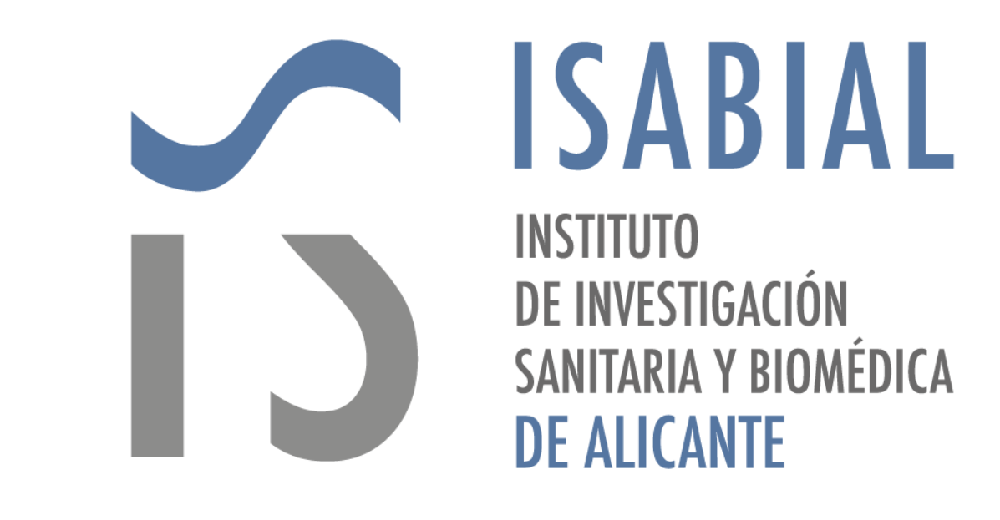

{{ ent_tag }}
{{ ent_title }}
{{ role_coordinator }}
FISABIO
{{ fisabio_desc }}
 {{ role_provider }} · {{ conselleria_desc }}
{{ role_provider }} · {{ conselleria_desc }}

{{ role_node }}
ISABIAL
{{ isabial_desc }}
{{ role_node }}
IIS La Fe
{{ iislafe_desc }}
{{ role_node }}
FIHGUV (Hospital General)
{{ fihguv_desc }}
{{ prof_tag }}
{{ prof_title }}
{{ prof1_title }}
{{ prof1_sub }}
{{ prof2_title }}
{{ prof2_sub }}
{{ prof3_title }}
{{ prof3_sub }}